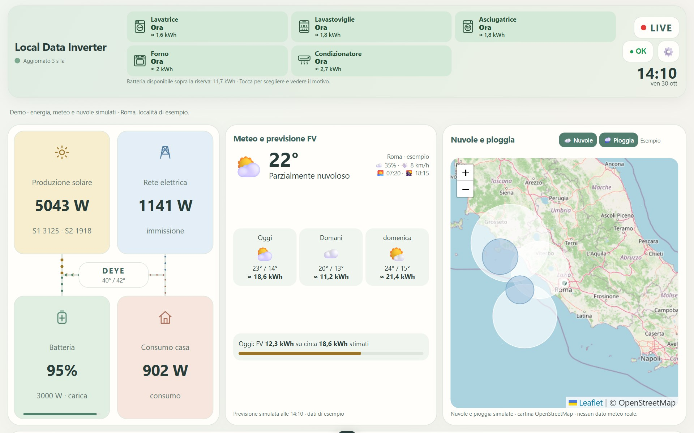
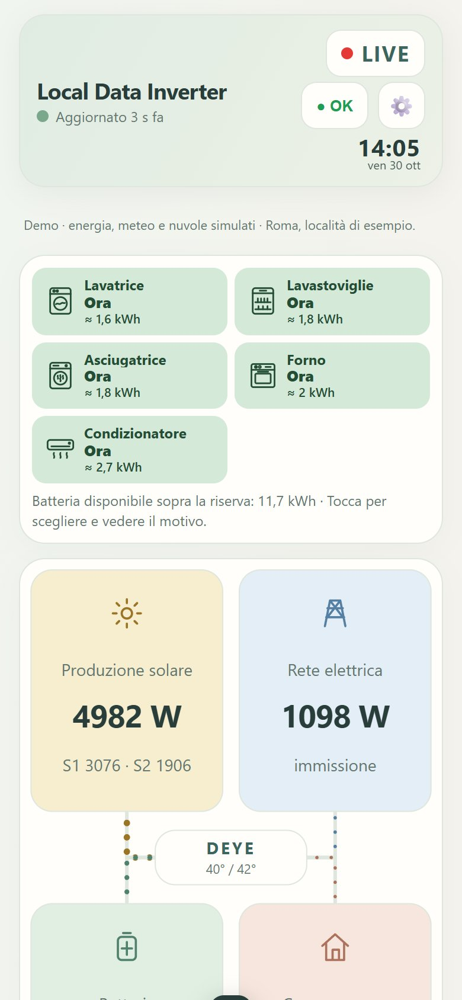
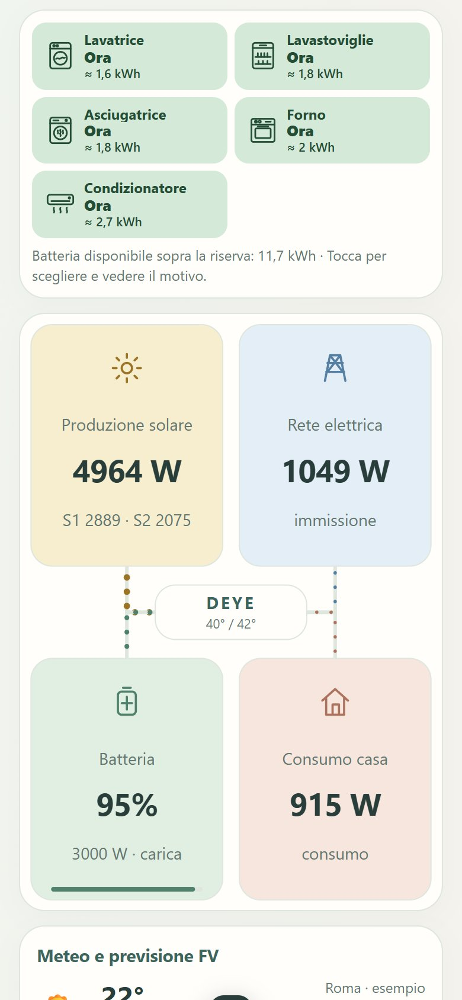
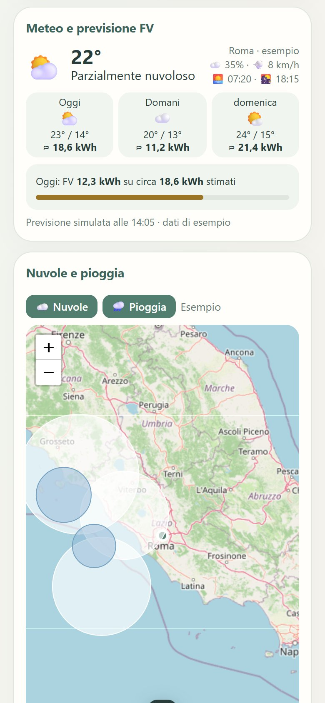

Local Data Inverter
Local Data Inverter
Local Data Inverter
Local Data Inverter
App Android gratuita che legge l'inverter direttamente dalla chiavetta Wi-Fi Solarman, in casa. Niente cloud, niente account.
⬇ Scarica l'appVersione 1.16 · Android 7 o più recente · circa 5 MB · come si installa

Pannelli, batteria, rete e casa in un colpo d'occhio, aggiornati ogni pochi secondi. Con il tasto LIVE, un minuto di dati ogni secondo.
Quanto produrrai oggi e domani, con la mappa di nuvole e pioggia.
Ti dice quando accendere lavatrice, forno o lavastoviglie per usare il sole e non la rete.
Stima della spesa e di quanto risparmi, con bolletta mensile o bimestrale.
Dati di oggi, grafici, storico, eventi e allarmi dell'inverter.
Modalità schermo sempre acceso, tema chiaro o scuro, grafica Nuova o Classica.




Le foto sono in modalità demo: dati di esempio, non reali.
Il vostro inverter non è tra i provati? Nell'app scegliete "Altro / non in elenco": la scheda "Esplora la rete" prepara un file da mandare nel gruppo, e con il vostro aiuto si aggiunge il vostro modello.
L'app legge i dati e basta: non manda nessun comando all'inverter e non cambia nessuna impostazione.
Letture distanziate; se la chiavetta non risponde l'app rallenta da sola e riprende appena risponde.
L'app li legge dalla chiavetta nella rete di casa e li salva solo sul telefono: non vengono inviati all'autore. Internet serve solo per meteo e previsione (Open-Meteo) e per la mappa con nuvole e pioggia (OpenStreetMap, EUMETSAT, RainViewer). Dettagli
Cosa resta sul telefono. Le letture dell'inverter (potenze, batteria, energia, allarmi), lo storico e le impostazioni (indirizzo IP e numero di serie della chiavetta, dati dell'impianto, tariffa, località) sono elaborati e salvati solo sul dispositivo. L'autore dell'app non ha server: questi dati non gli vengono inviati automaticamente.
Cosa viene trasmesso a servizi esterni. Per alcune funzioni l'app si collega a servizi di terzi. Come per ogni collegamento a internet, ognuno di questi servizi riceve l'indirizzo IP del dispositivo e i dati tecnici della richiesta (per esempio il tipo di browser).
• Open-Meteo (meteo e previsione FV): il nome della località che cerchi nelle impostazioni; poi, per la previsione, le coordinate della località scelta, l'inclinazione e l'orientamento dei pannelli. Secondo le condizioni di Open-Meteo, i registri del servizio possono contenere le coordinate e vengono cancellati dopo 90 giorni.
• OpenStreetMap (mappa), EUMETSAT (nuvole) e RainViewer (pioggia): le richieste delle immagini della zona mostrata sulla mappa, a livello di regione.
Ognuno di questi servizi tratta i dati secondo le proprie condizioni e informative, consultabili sui rispettivi siti.
Diagnostica ed Esplora la rete. Sono file che si creano solo se li chiedi e che partono solo se li condividi tu, a chi scegli. La Diagnostica contiene la versione dell'app, la marca scelta, la data e i valori dei registri letti, tra cui il numero di serie dell'inverter; non contiene IP, MAC né numero di serie della chiavetta. Esplora la rete contiene le porte aperte dei dispositivi trovati in casa con gli indirizzi mascherati (resta solo l'ultimo numero); dalle risposte dei dispositivi l'app toglie automaticamente indirizzi, nomi di rete e numeri di serie che riconosce. Questi filtri automatici non garantiscono la rimozione di ogni informazione identificativa. Se mandi questi file all'autore per avere aiuto, lui li riceve: mandali solo a chi ti aiuta e non pubblicarli nei commenti.
Condizioni d'uso. Dalla versione 1.16, per ricordare l'accettazione l'app salva sul dispositivo solo la versione delle condizioni accettate e la data.
Local Data Inverter — Versione sperimentale gratuita · condizioni versione 1.0
Copyright © 2026 hekoo89 (autore di Local Data Inverter). Tutti i diritti riservati sul software originale, fatti salvi i diritti dei titolari dei componenti di terze parti.
L'applicazione è distribuita gratuitamente per finalità di prova, valutazione tecnica e verifica della compatibilità con inverter fotovoltaici.
Non sono autorizzate la vendita, la rivendita, la redistribuzione, la modifica o lo sfruttamento commerciale del software originale senza il consenso scritto dell'autore, fatti salvi i diritti riconosciuti dalle licenze open source dei componenti di terze parti.
L'applicazione è sperimentale. I dati visualizzati potrebbero contenere errori e non devono essere utilizzati come unica fonte per decisioni tecniche, economiche o di sicurezza.
Il software è fornito senza garanzie, nei limiti consentiti dalla legge.
Le librerie open source e i servizi esterni mantengono le rispettive licenze e condizioni d'uso, consultabili nell'apposita sezione dell'app.
Al primo avvio l'app chiede di accettare queste condizioni. Le licenze dei componenti di terze parti (Capacitor, Leaflet, AndroidX, ha-solarman e altri) e le fonti dei dati sono nell'app, in Impostazioni → Licenze e fonti dei dati.

Nel gruppo Facebook trovi le nuove versioni, l'aiuto per configurare l'app e i consigli di chi la usa già. Se qualcosa non va, manda uno screenshot, la versione dell'app (in fondo alle impostazioni) e il modello di inverter e telefono.
👥 Entra nel gruppo